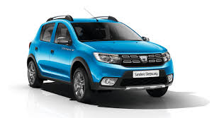
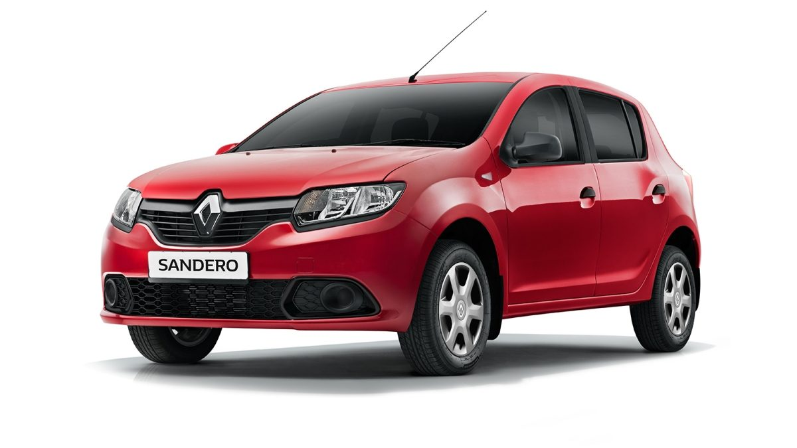

Renault Group — международная компания с французскими корнями и богатой, более чем 115-летней, историей. Мы работаем в 128 странах и конструируем, производим и продаем личные и коммерческие автомобили под тремя брендами: Renault, Dacia и RSM. Благодаря уникальному альянсу с компанией Nissan и стратегическому партнерству мы являемся четвертым по величине производителем автомобилей в мире. Сегодня в нашей компании работают более 120 000 по всему миру сотрудников; всех их объединяет страсть к автомобилям.
Dacia Sandero (в Україні називається Renault Sandero) - п'ятидверний хетчбек B Класу побудований на шасі Логана, формально не входить в сімейство Logan.Має внутрішньозаводський індекс B90. Відрізняється укороченою до 2591 мм колісною базою (у Логана 2630 мм) та іншою зовнішністю, вирішеною в дусі Renault Scenic.В 2012 році на Паризькому автосалоні представлено друге покоління Dacia Sandero
Перші офіційні фотографії Dacia Sandero другого покоління представлено 17 вересня 2012 року, офіційна презентація моделі відбулася на Паризькому автосалоні 2012 року.Оновлений хетчбек Sandero постав перед покупцями з безліччю високотехнологічних доповнень, які підняли машину в рейтингах і зробили кращою в класі.Sandero представлений на тій же платформі, що і модель Clio, але відрізняється великими габаритами і модернізованим двигуном. Інтер'єр машини виконаний з якісних матеріалів і більш ергономічний, в порівнянні з попередніми моделями.
Салон автомобіля оснащений: Bluetooth, MP3-радіо з USB, кондиціонером і електропривідними передніми і задніми вікнами. Модель виділяється наявністю круїз-контролю, що досить рідко для машин такого класу.Всередині автомобіль має досить місця і може з комфортом розмістити 4 дорослих людини. Багажний відсік має об'єм 292 літри. Автомобіль оснащений системою гальмування ABS, а також системами EBD і EBA. Серед функцій безпеки виділяють, також, Isofix. Екстер'єр автомобіля був повністю змінений від передніх фар до задніх ліхтарів, і поєднує в собі молодіжний і сучасний стилі.Стандартне обладнання і функції безпеки, представлені у всіх комплектаціях Dacia Sandero, включають: антиблокувальну гальмівну систему з функцією екстреного гальмування, передні і задні ремені безпеки з сигналізатором, два кріплення ISOFIX для дитячих крісел, систему електронної стабілізації, фронтальні і бічні подушки безпеки.
 | Перше покоління. |
|---|
| Dacia Sandero І |
| Також називається Renault Sandero І |
| Роки виробництва 2007—2012 |
| Клас Суперміні |
| Стиль кузова хетчбек |
| Платформа Dacia B0 |
| Двигун(и) |
| Бензинові: |
| 1,2–1,6 л |
| 55–64 кВт |
| Дизельні: |
| 1,5 л |
| 50–63 кВт |
| Колісна база 2588 мм |
| Довжина 4020 мм |
| 4091 мм (Stepway) |
| Ширина 1746 мм |
| Висота 1534 мм |
| 1578 мм (Stepway) |
| Кліренс 155 мм |
| Вага 1050–1204 кг |
| Місткість баку 50 л |